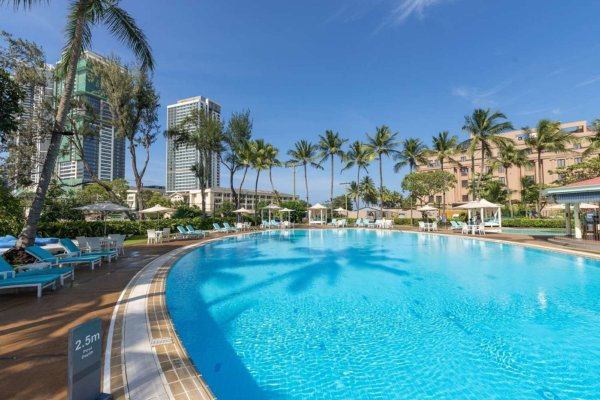
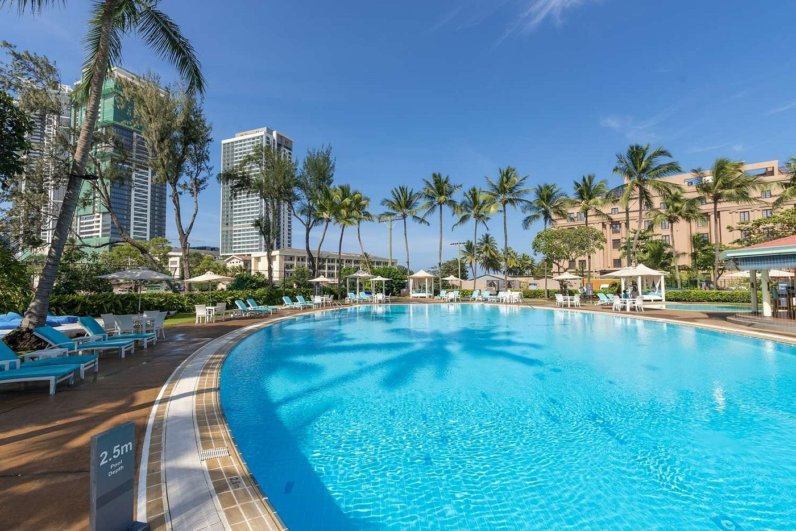

Hotel information and Featured amenities
Guest services Concierge
Dining On site restaurant Room service
Fitness and recreation Outdoor pool Fitness center
Business and work Executive lounge Meeting rooms
Conveniences Free parking Free WiFi Connecting Rooms
.jpg) 

.jpg)
Hilton Colombo is a Hilton brand five star luxury hotel in Colombo Sri Lanka. The hotel is owned by Hotel Developers Lanka Ltd. The company was incorporated in 1983 and was listed on the Colombo Stock Exchange in the following year. The hotel was launched in 1987 and the 30th anniversary was celebrated in 2017 with an issuance of a stamp and a first day cover. However the company is delisted from the stock exchange in 2020 and solely owned by the Government of Sri Lanka therefore it runs as a state owned enterprise.
History of Hilton Colombo
History The hotel is owned by Hotel Developers Lanka Ltd. and the company was incorporated in 1983.The company was listed on the Colombo Stock Exchange in 1984. Since its commencement and the company has had a troublesome history. As the promoters of the hotel did not have the means to finance the construction of the hotel the Government of Sri Lanka had to provide a guarantee of the payment of a yen loan worth LKR 1.3 billion. As a security for this guarantee the majority of the shares was transferred to the government. The land on which the hotel was built was leased from the Land Commissioner General's Department and due to the non payment of the land lease the land lease was cancelled and the land was reverted.The hotel was launched in 1987 and the 30th anniversary was celebrated in 2017. To mark the occasion a stamp and a first day cover were issued by the Sri Lanka Post.The new restaurants, Graze Kitchen and L.A.B lounge were opened after the first phase of the refurbishment. The Hotel Developers (Lanka) was delisted from the Colombo Stock Exchange in 2020. The Government of Sri Lanka solely owns Hotel Developers Lanka Ltd and therefore runs as a state owned enterprise.